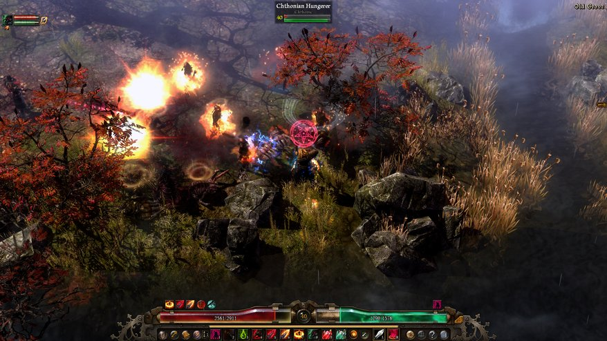

Sony Is Officially Implementing PS4 To PC Streaming
Well, this is awkward. Five days after a studio announced its intention to release a third-party PS4-to-PC streaming tool, Sony has announced it plans to release an official
one. The news comes via a Tweet by Sony Worldwide Studios president Shuhei Yoshida, who confirmed the functionality was coming.
The Features PC Gamers Want—An Open Letter To Developers And Gamers
For developers new to the PC, there can be bumps in the road. As I’ve learned from my interactions with some developers, at times they simply don’t know what PC
gamers want and expect from their games: graphics settings, keybindings, modding support, and more. Likewise, gamers often are not fully aware of the restrictions and workloads their
wishes impose on developers, and why some of these features may not be included.

Grim Dawn Update Launches Final Act
Somewhere between the delicate stat-tinkering of Path of Exile and the dopamine dispenser of Diablo 3, there's space for Grim Dawn, an action RPG that's
we first wrote about four years and eight months ago. It might be almost finished by the end of the year perhaps!